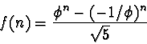

0.5.8 Fibonacci Calculation
The Fibonacci sequence is easy to understand but is a frequent target
for inefficient calculation. The first two terms in the sequence are
ones. Beginning with the third number in the series, the value is
defined to be the sum of the previous two. So, the beginning of the
Fibonacci sequence is as follows:
1, 1, 2, 3, 5, 8, 13, 21, 34, 55, 89, ...
Unfortunately the typical way to implement a Fibonacci calculation
function is by recursion. This is inefficient because of the enormous
call stack generated to calculate non-trivial terms in the series and
the great amount of duplicate work the computer must do to give you a
result. In the next section I give an efficient iterative Fibonacci
number calculator.
There is also an explicit formula for finding the nth Fibonacci
number. It is:

Where
is the golden ratio, an irrational number approximately
equal to
0.6180339...
|